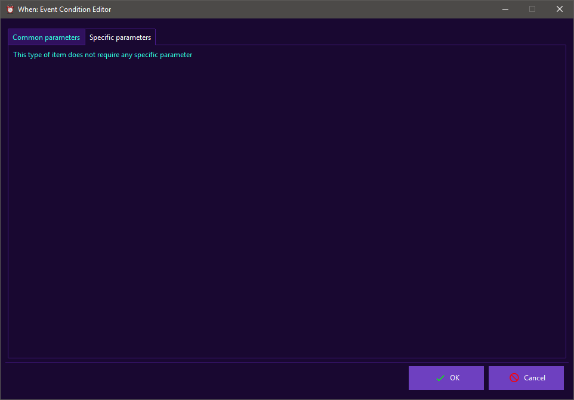

Event Conditions
Event based conditions are the simplest ones in terms of definition: there are no specific parameters to be set, because it is left to the events to decide what condition has to be fired.

Therefore, the Specific Parameters panel only displays a notice stating that no particular configuration is required.
Since this type of conditions is not time related, the related check might be performed at a random time between two scheduler ticks if the corresponding global scheduler option is set.